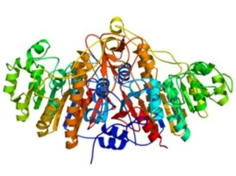

Функции:
Выполняет функцию отщепления фосфорного остатка у любых соединений, у которых он есть.
Локализация:
Является неспецифичным ферментом, содержится в лейкоцитах, тонкой кишке, почках, плаценте. Для определения патологии печени биохимическим методом анализа крови в приоритете его содержание в крови.
Наибольшее количество содержится в костной ткани. Это секреторный фермент, повышение активности которого указывает на синдром холестаза. ЩФ может повышаться не только по причине холестаза. В период роста у организма наблюдается повышенное содержание холестазы в крови, вследствие роста костной ткани. ЩФ также повышается во время беременности и при заболеваниях костей. В редких случаях, например, при гипофосфатемии или гипотиреозе, активность ЩФ может оставаться в норме.